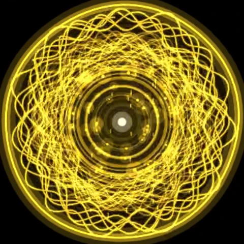
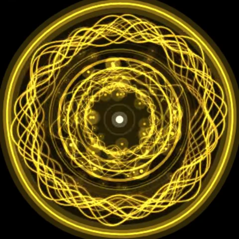
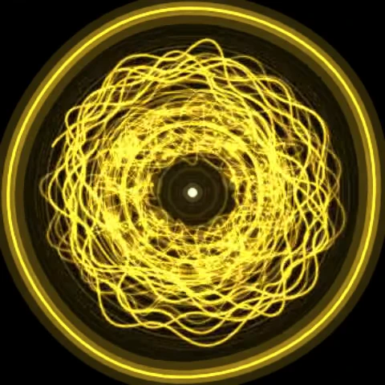
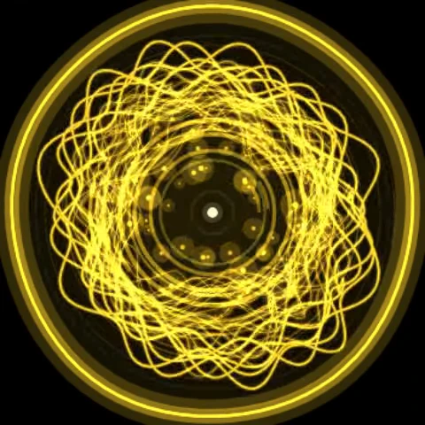
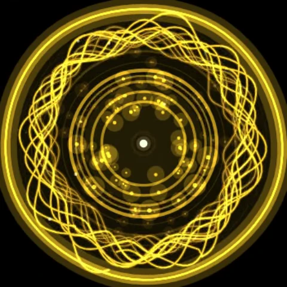
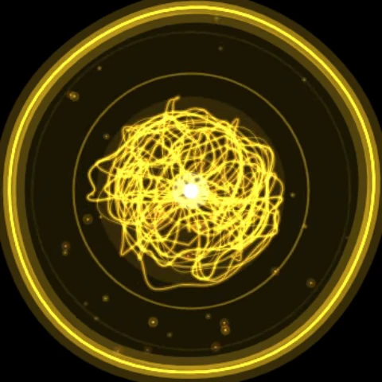
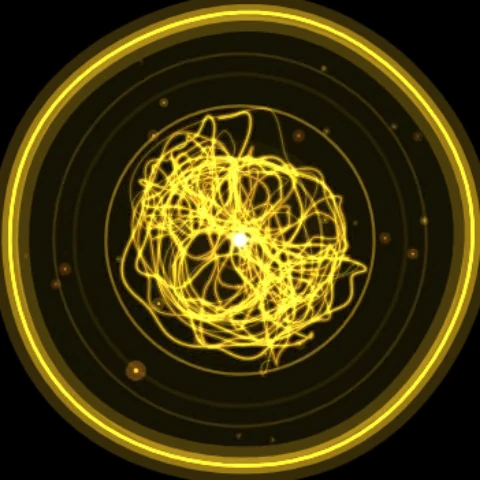
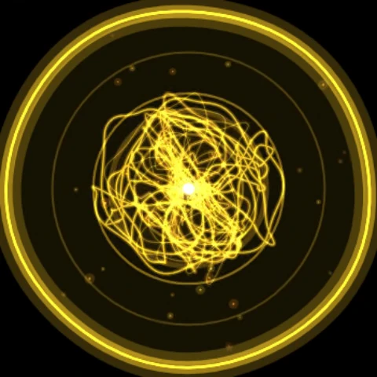
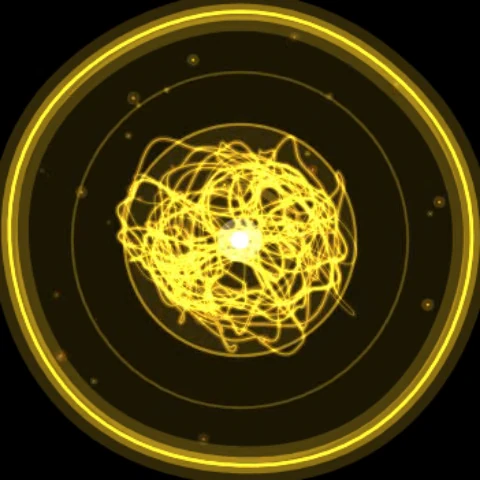

Visualizer sweep
Favourite looks from a sweep of 27 Visual mix combinations on build v12, across the Moods page (page 1) and the Resonance page (page 4). Open Visual mix in the app to try them for a calm, immersive listening session.
Showcase
All nine favourites in about 20 seconds. Video only, without sound.
Contact sheet
Page 1 · Moods

Spark + waterfall Spark mood, layers 4, movement 1.5, circles 8, speed 2, waterfall 0.9

Glow + pads Glow (528 Hz), layers 2, movement 0.8, circles 5, speed 0.8, pads 0.9

Create + pink Create, layers 4, movement 2, circles 12, speed 2.5, pink 1.0

Active + wind Active, layers 3, movement 1.6, circles 5, speed 1.3, wind 0.8

Ease + white Ease (432 Hz), layers 0, movement 1, circles 2, speed 1, white 1.0
Page 4 · Resonance

Drone carrier 60 Hz, beat 7.83, layers 1, movement 0.5, circles 6, speed 0.7, drone 0.9

Waterfall carrier 320 Hz, beat 10, layers 2, movement 1.2, circles 6, speed 1.5, waterfall 0.8

Stream monaural carrier 240 Hz, beat 12, monaural, stream nature 0.6, ambient off, layers 2, movement 1, circles 6, speed 1

Pink slow carrier 120 Hz, beat 4, layers 3, movement 0.5, circles 12, speed 0.6, pink 0.6
Values match the Visual mix sheet: layers, movement, circles, circle speed, ambient sound and level.Back to Biotone